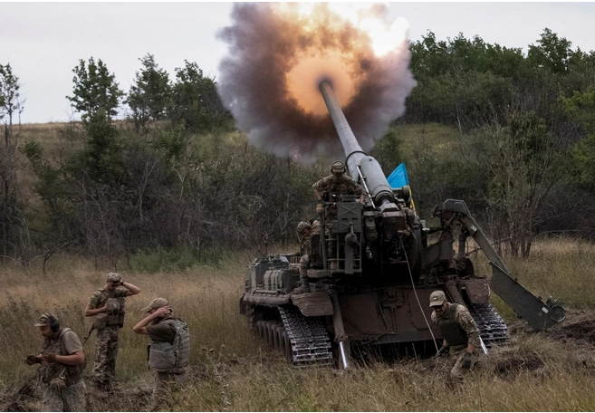

I. Phát ngôn Bộ Ngoại giao Ukraine
"Đề xuất thực tế duy nhất là Nga phải chấm dứt ngay lập tức cuộc chiến chống Ukraine và rút quân đội Nga khỏi lãnh thổ Ukraine", Oleh Nikolenko, người phát ngôn Bộ Ngoại giao Ukraine, tuyên bố hôm 30/10.
Theo ông Nikolenko, nếu Nga thực sự muốn đàm phán, họ sẽ không phá hủy hạ tầng năng lượng của Ukraine khiến người dân Ukraine "đóng băng" vào mùa đông, không tham gia vào các vụ tấn công dân thường, không nã pháo vào các khu dân cư, không thông báo huy động thêm 300.000 quân nhân, không chặn nguồn cung ngũ cốc và không đưa ra bất kỳ tối hậu thư nào.
Moscow gần đây tăng cường các cuộc tập kích diện rộng bằng tên lửa và máy bay không người lái nhằm vào hạ tầng trọng yếu như lưới điện của Ukraine, khiến 30% cơ sở năng lượng ở nước này bị hư hại và gây mất điện trên diện rộng. Nga tuyên bố các cuộc tập kích tên lửa là hành động đáp trả một số âm mưu phá hoại của Ukraine nhằm vào cơ sở hạ tầng của Nga.
Tuyên bố của người phát ngôn Bộ Ngoại giao Ukraine được đưa ra sau khi Ngoại trưởng Nga Sergey Lavrov nói rằng, Tổng thống Nga Vladimir Putin sẵn sàng đàm phán với Ukraine.
Theo Ngoại trưởng Lavrov, Nga vẫn đang chờ đợi phản ứng của phương Tây để có thể "đưa ra một số cách tiếp cận nghiêm túc giúp xoa dịu căng thẳng và tính đến lợi ích của Nga cũng như an ninh của nước này".
II. Màn "tung hỏa mù" nhằm câu giờ
Ông Nikolenko cho rằng tuyên bố sẵn sàng đàm phán của Ngoại trưởng Nga chỉ là màn "tung hỏa mù" nhằm "câu giờ" trong bối cảnh quân đội Nga đang gặp khó khăn trong chiến dịch
"Chúng tôi cảm kích các đối tác quốc tế đã sát cánh cùng Ukraine trong cuộc đấu tranh vì sự tồn vong của Ukraine. Chỉ có những nỗ lực chung mang tính quyết định mới có thể ngăn chặn Nga", người phát ngôn Bộ Ngoại giao Ukraine nhấn mạnh.
Ngày 29/10, Nga tuyên bố đình chỉ thỏa thuận ngũ cốc với Ukraine ở khu vực Biển Đen sau khi các tàu chiến của Nga tại quân cảng Sevastopol ở Crimea bị quân đội Ukraine tập kích. Trước đó, đại diện của chính phủ Nga và Ukraine hồi tháng 7 đã đồng ý về thỏa thuận cho phép mở lại các cảng của Kiev ở Biển Đen, qua đó nối lại việc xuất khẩu nông sản, đặc biệt là ngũ cốc của Ukraine.
Khi được hỏi về phản ứng của Mỹ khi Nga đình chỉ thỏa thuận cho phép nông sản của Ukraine được xuất khẩu ra nước ngoài thông qua các cảng tại Biển Đen, Tổng thống Mỹ Joe Biden đã gọi đây là một "động thái hoàn toàn thái quá". Đáp lại, Đại sứ Nga tại Mỹ Anatoly Antonov nhấn mạnh vụ tập kích nhằm vào Hạm đội Biển Đen mà quân đội Ukraine thực hiện với sự hỗ trợ của các chuyên gia Hải quân Anh là nguyên nhân chính dẫn đến quyết định của Nga.